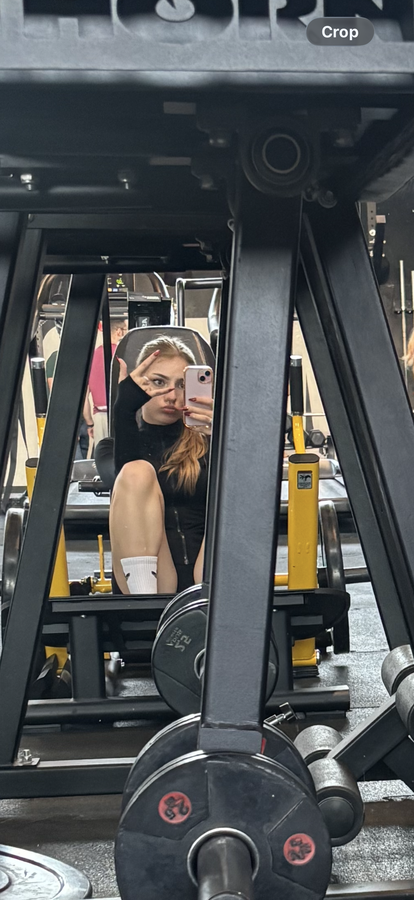
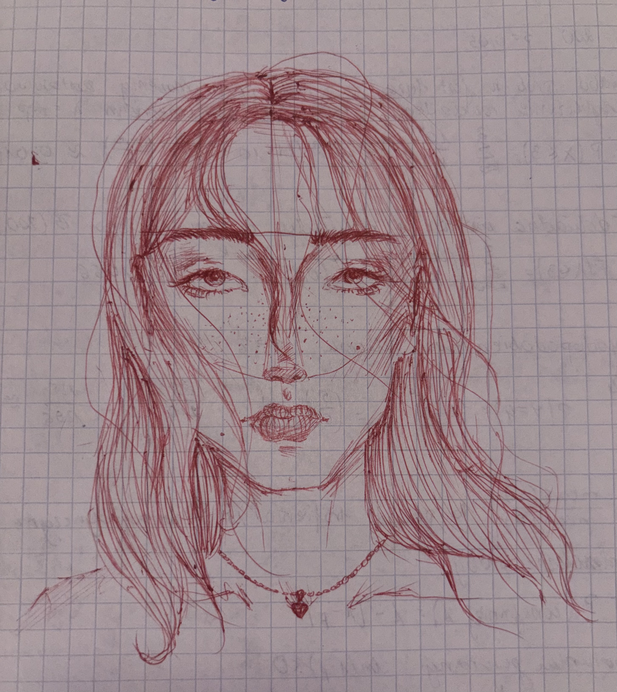
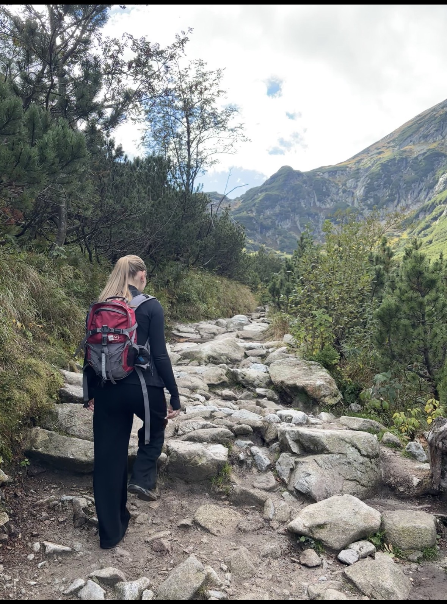
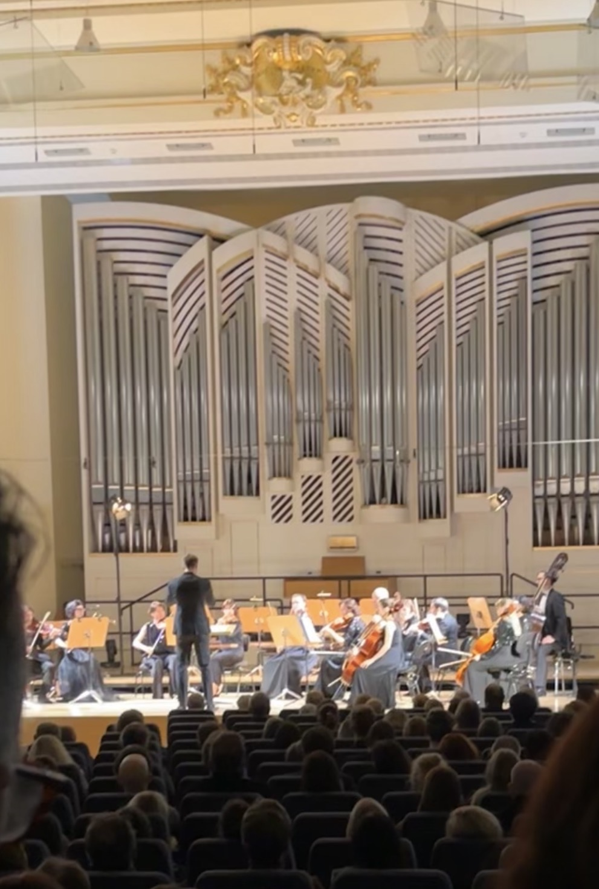
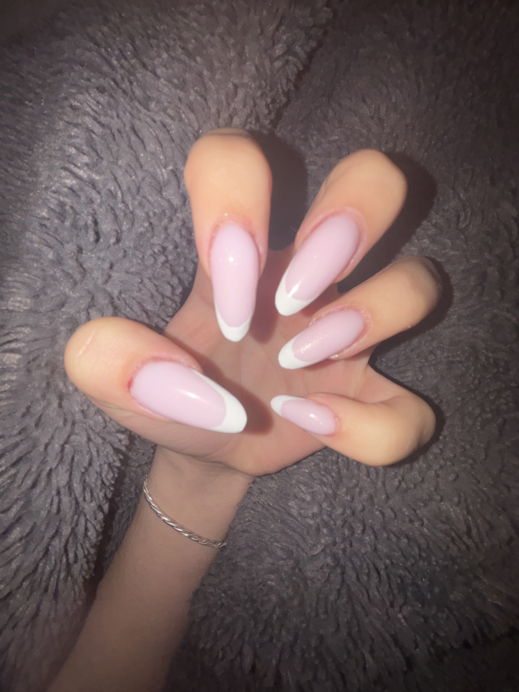
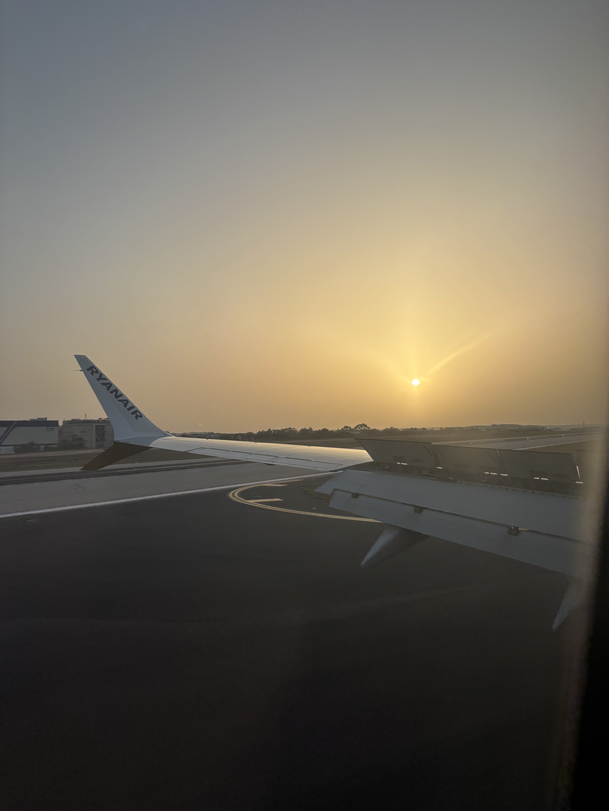

Siłownia
Od kilku lat najczęstrzym dodatkowym zajęciem, które wybieram jest trening siłowy. Świadomość dbania o swoje ciało i wyrabianie dyscypliny sprawia mi ogromną przyjemność.
To czym się zajmuje jak nie spędzam czasu na uczelni

Od kilku lat najczęstrzym dodatkowym zajęciem, które wybieram jest trening siłowy. Świadomość dbania o swoje ciało i wyrabianie dyscypliny sprawia mi ogromną przyjemność.

Rysunek to moja pasja od dziecka, na którą z przerwami znajduje czas przez całe moje życie. Uwielbiam szkicować, szczególnie gdy mam zbyt dużo myśli w głowie.

Jedną z moich ulubionych akttywności fyzycznych jest chodzenie po górach. Wędrówki i piękne widoki z wysokości powalają mi na nowo zakochać się w naturze.

Chodziłam do szkoły muzycznej przez 6 lat, rozwijając się w grze na fortepianie. Do dziś z uśmiechem na twarzy wspominam te czasy i zawsze z chęcią wracam do filcharmonii, czy muzyki klasycznej.

Z troche artystyczno-manualnej strony, zajmuję się rownież stylizacją swoich paznokci.

Zwiedzenie świata i poznanie różnych kultór to jest jedno z moich największych marzeń.